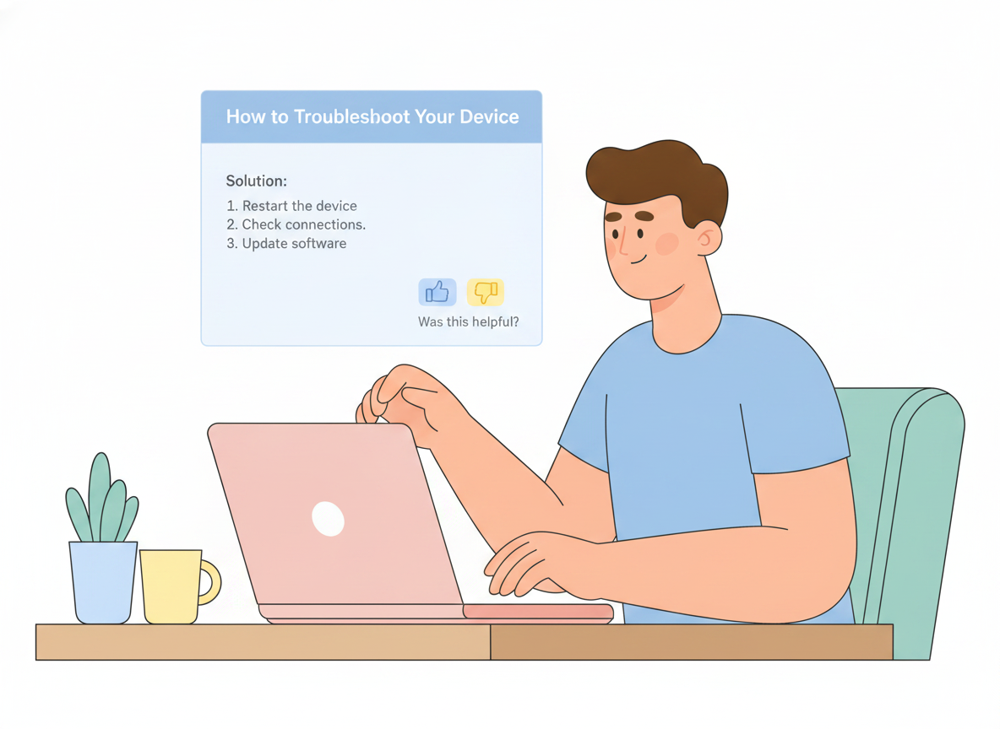

Help Center Deflection Is the Wrong Goal — Design for Resolution Instead
Most teams measure their help center by one number: how many tickets it deflects. Fewer tickets in the queue feels like a win. But deflection only tells you that someone didn't contact you — not that they got what they came for. A customer who gives up and closes the tab counts as "deflected" too.
That gap matters more than it sounds. By the end of this article you'll know why deflection is a misleading target, what a failed self-service visit actually costs you, and the specific design choices that move a help center from avoiding contact to resolving problems.
What deflection really measures — and what it misses
Deflection is the share of customer questions answered without a human agent. It's easy to track, which is exactly why it became the default metric. The trouble is that it counts attempts, not outcomes.
The data on outcomes is sobering. A Gartner survey found that only 14% of customer service issues are fully resolved in self-service, even though 73% of customers use self-service at some point in their journey. Even for problems customers themselves described as "very simple," barely more than a third were solved without an agent. Nearly half of the people who started in self-service said the company didn't understand what they were trying to do.
Read that against a typical deflection dashboard and the picture flips. A high deflection rate sitting on top of a low resolution rate doesn't mean your help center is working. It means a lot of people are leaving without an answer — and you're calling that a success.
The hidden cost of a failed help center visit
A deflected-but-unresolved visit isn't neutral. It's negative, and it compounds.
Classic research from Harvard Business Review on customer effort found that the fastest way to lose loyalty is to make people work hard for an answer. Customers who fail in the channel they chose — say, a help center — and then have to pick up the phone are measurably more likely to become disloyal than customers who resolve their issue in one place. The effort of the failed attempt, not just the unresolved problem, is what drives them away.
So a weak help center does double damage. You pay for the article that didn't help, and then you pay again when a frustrated customer reaches an agent already primed for a bad conversation. "We deflected 60% of tickets" can quietly mean "we made 60% of customers try, fail, and start over."
This is why chasing deflection as a target can backfire. Optimize to keep people out of the queue and you'll happily ship an FAQ that technically answers a question while helping no one.
Design your help center for resolution, not deflection
Resolution is a design problem, not a reporting one. The shift is simple to state and harder to do: stop asking "how do we stop this ticket?" and start asking "how does this person finish their task?" These are the choices that get you there.

Start with the questions people actually ask
Your best source of help center content is your own support queue. Pull the most common and most costly tickets, group them by the underlying task the customer was trying to complete, and write to those tasks. This grounds your content in real language and real problems instead of the internal, feature-shaped view your team defaults to.
The test for every article: does it match a question a customer would actually type? If it reads like a product spec, rewrite it as an answer.
Write task-oriented content people can act on
A resolution-focused article walks someone from problem to done. Lead with the outcome, lay out numbered steps, and cut everything that isn't part of getting there. One task per article keeps each page scannable and keeps search from pointing people at a wall of loosely related text.
Plain language does a lot of the work here. A readability check — the kind built into Sonat's editor — flags long sentences and jargon before a customer ever hits them. If a reader has to decode the answer, you've added effort, and effort is the thing you're trying to remove.
Make answers findable in seconds
Content only resolves if people can reach it. That means fast, forgiving full-text search that tolerates the words customers use rather than your internal terms, plus a menu structure organized around tasks and topics instead of your org chart. Gartner projects that self-service will become one of the top customer service channels within the next few years — findability is what decides whether that growth helps or frustrates your customers.
A clear, consistent structure across every article also makes the whole help center easier to scan, so people build confidence that the answer is in here somewhere.
Close the loop with feedback on every article
You can't fix what you can't see. A simple "Was this helpful?" on every page turns your help center into a live signal of where self-service is breaking down. Pair that with search analytics — especially searches that return nothing — and you have a running list of the gaps costing you resolutions.
Sonat treats this feedback loop as a first-class part of the platform: readers can flag topics, and authors see which articles are pulling their weight and which need work. That's the difference between a static file dump and a help center that improves every week.
Keep content current so self-service keeps working
Nothing erodes trust faster than a confident answer that's out of date. Every product change is a potential wave of wrong articles, and a wrong article is worse than a missing one — it sends people down the incorrect path with full confidence.
Treat documentation the way engineers treat code. Version every topic so you can see what changed and roll back if needed. Use review and approval workflows so an update is checked before it goes live. Keep parallel variants when you support multiple product editions, so each audience sees the version that's true for them. Sonat brings all three — version history, approval workflows, and variants — to non-technical authors, which is what makes staying current sustainable instead of heroic.
Let AI answer from your own docs, not from guesses
AI is quickly becoming the front door to self-service, and it changes the math. A well-run AI assistant can synthesize an answer across several articles and hand the customer a direct resolution instead of a list of links to sift through.
The catch is grounding. An assistant is only as trustworthy as the content behind it. If your documentation is thin, stale, or contradictory, AI will confidently repeat those flaws at scale. Sonat's AI Answer Generator works across your published documents, so the quality of your answers rises and falls with the quality of your docs — which is exactly why the earlier steps matter. Good content is the moat. AI is the amplifier.
Measure resolution, not just deflection
If deflection is the wrong target, what replaces it? Track the signals that actually reflect a solved problem:
- Self-service resolution rate — of people who started in the help center, how many finished there without opening a ticket.
- Article helpfulness — the yes/no feedback per page, so you can spot the articles quietly failing.
- Zero-result and repeat searches — the questions your content doesn't answer yet.
- Ticket-to-article traceability — which incoming tickets map to a topic that should have deflected them, but didn't.
Deflection still has a place as one input. Just don't let it stand in for success. The number that matters is whether the customer walked away finished.
The shift worth making
Deflection asks, "Did we avoid this conversation?" Resolution asks, "Did we solve this person's problem?" Only one of those builds loyalty, and the research is clear that the failed attempts hiding inside a healthy-looking deflection rate are actively pushing customers away.
The fix isn't a better dashboard. It's a help center built to finish the job: grounded in real questions, written as tasks, easy to search, kept current, wired for feedback, and backed by AI that answers from your own documentation. That's the help center Sonat is built to help non-technical teams create — start free at sonat.com and design yours for resolution.